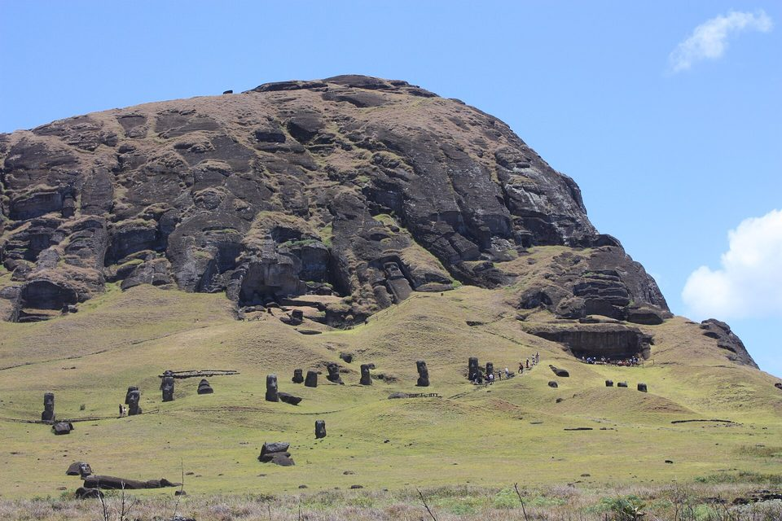
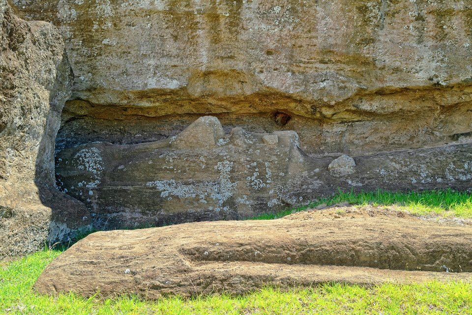
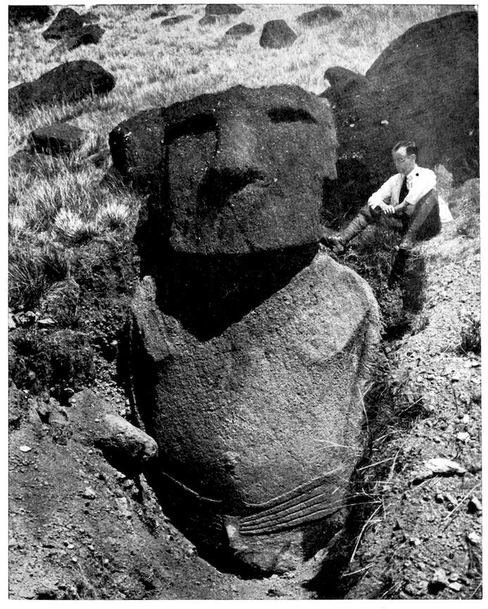
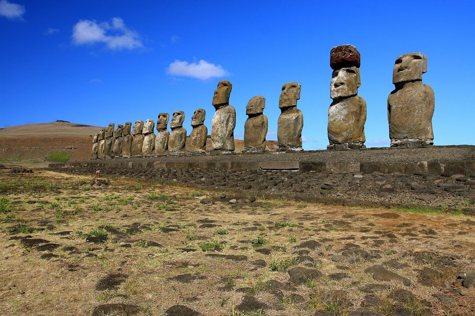
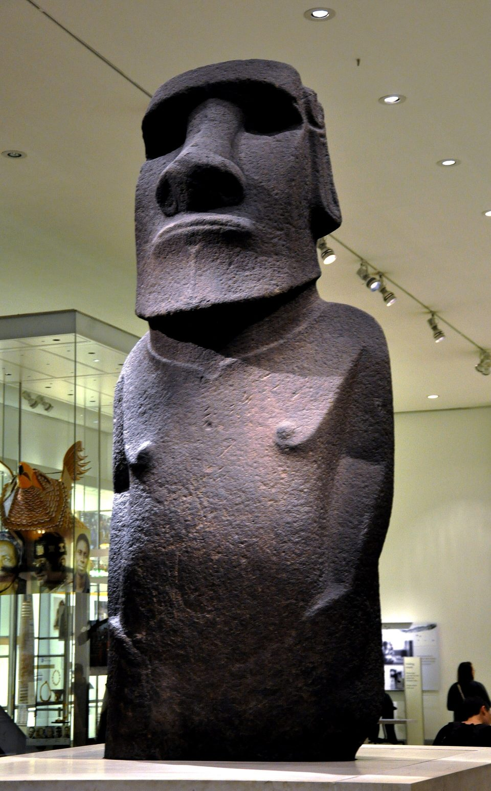

Os moais da Ilha de Páscoa — os corpos debaixo da encosta
As cabeças que todo mundo conhece, na encosta de um vulcão no meio do Pacífico, não são cabeças. São estátuas inteiras, com tronco, braços e mãos, enterradas até o peito pela terra que desceu da própria pedreira. O mesmo engano — ver só a parte de cima — se repete na história de quem as fez.
- Onde
- Rapa Nui (Ilha de Páscoa), Chile
- Povoamento
- datas divergem: ≈ 800 a 1200 d.C.
- Estátuas
- ≈ 900 a 1.000, conforme o inventário
- Feitas em Rano Raraku
- ≈ 95%
- Maior erguida
- Paro, ≈ 10 m
- Maior inacabada
- Te Tokanga, ≈ 21 m
Rapa Nui é um triângulo de terra vulcânica com cerca de 164 quilômetros quadrados, a uns 3.500 quilômetros da costa do Chile e a pouco mais de 2.000 da ilha habitada mais próxima, Pitcairn. É um dos lugares mais isolados que os seres humanos já povoaram. Os navegadores polinésios chegaram ali em canoas de casco duplo, vindos do oeste, e trouxeram o que trazia toda expedição polinésia: plantas de cultivo, galinhas e — de carona ou de propósito — o rato-do-pacífico.
O que deixaram é conhecido no mundo inteiro: os moai, figuras humanas de pedra, de cabeça grande, nariz longo e queixo marcado, quase todas esculpidas num mesmo vulcão. Eram erguidas sobre plataformas cerimoniais chamadas ahu, em geral de costas para o mar e de frente para as aldeias, e são lidas pelos próprios rapanui como representações de ancestrais. Nenhuma delas é um mistério sem dono: há um povo vivo, com língua, tradição oral e reivindicações, que as chama de suas.
O mistério que a internet repete — "quem fez, e como?" — é o menos misterioso dos três. As perguntas difíceis são outras: quando a ilha foi povoada, como estátuas de dezenas de toneladas cruzaram quilômetros sem roda nem animal de tração, e o que de fato aconteceu com a população. A versão que virou best-seller responde às três de uma vez, com uma história de autodestruição. A pesquisa dos últimos vinte anos separou as três, e respondeu cada uma de outro jeito.

01Quando chegaram: a data que encolheu
Por boa parte do século XX, a data aceita para a chegada dos primeiros polinésios ficava entre os séculos IV e VIII. Ela vinha de datações por radiocarbono feitas a partir dos anos 1950, algumas com margens de erro de dois séculos para cada lado, e de amostras de carvão cuja ligação com ocupação humana nem sempre era clara.
Em 2006, Terry Hunt e Carl Lipo publicaram na Science datações novas das camadas mais antigas da praia de Anakena, o local de desembarque da tradição oral, e propuseram uma cronologia curta: chegada por volta de 1200 d.C. Trabalhos posteriores que aplicaram critérios mais rígidos às datas antigas — descartando amostras de contexto incerto ou de madeira que podia já ser velha quando queimou — chegaram a um intervalo parecido, em torno de 1150 a 1280. A cronologia curta é hoje a mais citada, e casa com o povoamento tardio de toda a Polinésia oriental.
Não é unanimidade. Pesquisadores ligados às escavações mais antigas continuam defendendo que algumas datas do primeiro milênio merecem revisão, e não descarte. A divergência importa por uma razão prática: se a ilha foi ocupada em 800, houve quatro séculos a mais para a população crescer e para a floresta sumir devagar; se foi em 1200, tudo — moais, desmatamento, plataformas — aconteceu em muito menos tempo.
02A pedreira: centenas de estátuas pela metade
Quase todos os moais — cerca de 95% — foram esculpidos em Rano Raraku, um cone vulcânico pequeno no leste da ilha. A rocha é um tufo de lapilli, cinza vulcânica compactada, macio o bastante para ser trabalhado com ferramentas de basalto, chamadas toki, que ainda se acham aos milhares no lugar. Outras estátuas, muito menos numerosas, foram feitas de basalto, de traquito ou de escória vermelha. A pedra vermelha de Puna Pau serviu para os pukao, os cilindros que algumas estátuas usam na cabeça.
O que torna Rano Raraku único é estar parado no meio do trabalho. As estátuas eram esculpidas deitadas, de costas para a rocha, primeiro a frente e os lados; por último se cortava a quilha que as prendia ao paredão, e a peça era descida pela encosta. Há moais em todas as etapas: contornos mal começados, figuras com rosto pronto ainda grudadas pela espinha, nichos vazios de onde uma estátua já saiu. O maior deles, Te Tokanga, tem cerca de 21 metros e nunca foi solto da rocha — mais que o dobro do maior moai que chegou a ser erguido.

Por que tantas ficaram pela metade é uma das perguntas abertas. Há três explicações, que não se excluem. Parte das peças pode ter sido abandonada por defeito — uma inclusão de rocha dura, uma rachadura. Parte reflete o fim da produção, quando os moais deixaram de ser feitos. E Te Tokanga talvez nunca tenha sido pensado para sair dali: o tamanho dele não tem paralelo em nenhum moai transportado.
03Os corpos debaixo da encosta
Nas encostas de Rano Raraku, por dentro e por fora da cratera, há dezenas de moais de pé, dos quais só se veem cabeça e ombros. São eles as "cabeças da Ilha de Páscoa" das fotografias. A imagem engana: debaixo de cada uma há um corpo inteiro, de vários metros, coberto pelos detritos que desceram da pedreira ao longo de séculos — o entulho do próprio trabalho de escultura, mais a erosão do vulcão.

Isso não é descoberta recente. A arqueóloga britânica Katherine Routledge escavou algumas dessas estátuas durante a expedição Mana, em 1914 e 1915, e fotografou corpos inteiros dentro das valas. Thor Heyerdahl repetiu escavações na expedição norueguesa de 1955–1956. A notícia viral de tempos em tempos — "as cabeças têm corpo!" — conta como novidade o que está publicado há mais de cem anos.
O que é recente é o detalhe. Entre 2010 e 2011, o Easter Island Statue Project, dirigido pela arqueóloga Jo Anne Van Tilburg, da Universidade da Califórnia em Los Angeles, escavou de novo duas estátuas na pedreira, com registro moderno. Uma delas tinha as costas cobertas de petróglifos: canoas polinésias, um peixe-voador e outros motivos, que a equipe estudou num artigo de 2021. E a escavação mostrou como ela fora erguida: num buraco fundo, assentada sobre uma base de pedra e travada por uma pedra de calço, o mesmo sistema usado nos ahu.
A consequência é que essas estátuas não estão "a caminho" de lugar nenhum. Foram erguidas ali de propósito. Para que, é discutido: Van Tilburg sugere que muitas ficaram de pé para que as costas fossem terminadas antes da viagem; outros pesquisadores as leem como estátuas destinadas à própria pedreira, que funcionaria também como lugar cerimonial. As escavações não decidem entre as duas leituras.
04Como foram movidos
A tradição oral rapanui tem uma resposta curta: os moais caminharam, pela força do mana. Durante muito tempo, os pesquisadores leram isso como metáfora e trabalharam com uma ideia mais intuitiva — a estátua deitada sobre um trenó de madeira, puxada sobre trilhos ou rolos. A hipótese exigia muita madeira e muita gente, e por isso se encaixou bem na história do desmatamento.
O teste experimental tem uma história longa. Em 1986, o engenheiro tcheco Pavel Pavel, com Heyerdahl, mostrou que um moai de pé podia avançar balançado por cordas, girando sobre a base. Em 1987, Charles Love testou uma estátua de pé sobre um trenó com rolos. Em 1998, Van Tilburg testou uma réplica deitada sobre uma estrutura em escada. Todas funcionaram, cada uma com suas dificuldades. Um experimento que funciona prova que o método era possível — não que foi o usado.
O que mudou o debate foi olhar para as estátuas que ficaram pelo caminho. Há cerca de sessenta moais caídos ao longo das antigas estradas que saem de Rano Raraku. Hunt e Lipo mostraram que eles não são iguais aos dos ahu: têm a base mais larga, em forma de D, e o corpo inclinado para a frente. Esse desenho deixa o centro de gravidade à frente da base, que é exatamente o que uma estátua precisa para "andar" em zigue-zague, balançada por cordas dos dois lados e puxada por uma terceira por trás. Quando chegava ao ahu, a estátua era retrabalhada: a base era aplanada e a inclinação desaparecia.
Em 2012, a equipe construiu uma réplica de concreto de 4,35 toneladas com as proporções de um moai de estrada. Dezoito pessoas, com três cordas, fizeram-na avançar cem metros em cerca de quarenta minutos. O artigo saiu em 2013. As estradas reforçam a leitura: têm cerca de quatro metros e meio de largura e perfil levemente côncavo, que ajuda a segurar uma estátua oscilando. E o padrão de quebra das estátuas caídas — de frente e de costas, quebradas onde uma peça de pé tombaria — é o de uma peça que caiu em movimento, não o de uma que escorregou de um trenó.
05O colapso que virou best-seller
A versão mais conhecida da história de Rapa Nui foi consolidada nos anos 1990 e popularizada por Jared Diamond no livro Colapso, de 2005. Ela diz o seguinte: a população cresceu até talvez quinze ou vinte mil pessoas; os clãs competiram erguendo moais cada vez maiores; a floresta foi derrubada para transportá-los e para abrir roças; sem árvores não havia canoas, a terra erodiu, veio a fome, a guerra e até o canibalismo; e quando os europeus chegaram, em 1722, encontraram os sobreviventes de uma sociedade que se destruiu sozinha. É uma parábola ecológica poderosa, e por isso circulou tanto.
Uma parte dela é sólida. A ilha teve, sim, uma floresta, dominada por uma palmeira gigante hoje extinta, e ela desapareceu depois da chegada humana — os testemunhos de pólen dos lagos das crateras mostram isso. A produção de moais também parou, e as estátuas dos ahu acabaram todas derrubadas no século XIX. O que a revisão contesta é a ligação entre os fatos, e a queda populacional que deveria tê-los acompanhado.
O que a pesquisa recente acrescentou
- Os ratos. O rato-do-pacífico, sem predadores na ilha, multiplicou-se rápido. Cocos de palmeira achados em cavernas têm quase todos marcas de dentes de rato. A tese de Hunt e Lipo é que os ratos impediram a floresta de se regenerar, comendo as sementes, enquanto o fogo e as roças abriam o terreno. A floresta sumiu, mas não por causa dos moais.
- As roças de pedra. Os rapanui cultivavam batata-doce em "jardins de pedra" — pedras espalhadas no solo para guardar umidade e nutrientes. Um estudo de junho de 2024 na Science Advances, de Dylan Davis, Robert DiNapoli e colegas, mapeou esses jardins por satélite com aprendizado de máquina e concluiu que cobriam bem menos área do que se estimava. A população que sustentariam, somada à pesca, ficaria em torno de 3.900 pessoas no máximo — perto dos cerca de três mil que os primeiros visitantes europeus estimaram, e muito longe dos quinze mil do colapso.
- Os genomas. O estudo publicado na Nature em setembro de 2024, liderado por Víctor Moreno-Mayar e Anna-Sapfo Malaspinas, sequenciou quinze rapanui que viveram entre 1670 e 1950. Não há sinal do gargalo populacional no século XVII que a hipótese do colapso exige: a população cresceu de forma estável do século XIII até o contato europeu.
- As plataformas. Uma análise bayesiana das datas de construção dos ahu, de 2020, concluiu que os rapanui continuaram construindo, mantendo e usando os monumentos por pelo menos 150 anos depois de 1600 — ou seja, até depois da chegada dos europeus, em 1722.
- A seca. Um estudo de novembro de 2025 na Communications Earth & Environment, a partir de ceras de folhas preservadas nos sedimentos das crateras, identificou uma seca prolongada a partir de meados do século XVI, com queda de 600 a 800 milímetros na chuva anual. O início coincide com a redução da construção de moais e ahu e com a ascensão do culto do homem-pássaro em Orongo. É uma explicação de adaptação a um clima mais seco, não de suicídio ecológico.
Os defensores da versão clássica não desapareceram, e algumas críticas são legítimas: estimativas de população por satélite dependem de premissas sobre produtividade agrícola; e os genomas analisados começam em 1670, de modo que o período antes disso é inferido por modelo. Mas o peso da evidência mudou de lado. A versão que hoje tem mais apoio é a de uma população pequena, que transformou a paisagem, adaptou a agricultura e a religião, e seguia funcionando quando os navios chegaram.

06O colapso que aconteceu de fato
Houve um colapso populacional em Rapa Nui. Ele só não foi pré-histórico. O navegador holandês Jacob Roggeveen chegou no domingo de Páscoa de 1722 — daí o nome europeu da ilha — e abriu um século e meio de contatos que trouxeram doenças. Em dezembro de 1862, navios peruanos de traficantes de escravos levaram à força cerca de 1.400 a 1.500 rapanui, algo como um terço da população, para trabalhar em plantações e nas jazidas de guano. A maioria morreu em pouco tempo. Sob pressão internacional, alguns sobreviventes foram mandados de volta; trouxeram a varíola, e a epidemia devastou quem tinha ficado.
Depois vieram missionários, a deportação de moradores para o Taiti e a transformação da ilha numa fazenda de ovelhas. Em 1877 restavam 111 rapanui. Junto com as pessoas foi-se a maior parte da memória: sacerdotes, chefes e quem sabia ler o rongorongo, a escrita da ilha, ainda hoje não decifrada. O Chile anexou Rapa Nui em 1888. É esse colapso, documentado e causado de fora, que a parábola do ecocídio tende a apagar — e é por isso que muitos rapanui rejeitam a versão de que seus ancestrais destruíram a própria ilha.
07Fogo, restituição e uma estátua na lagoa
O incêndio de 2022
Em 4 de outubro de 2022, um incêndio atingiu mais de cem hectares do Parque Nacional Rapa Nui, e a área mais afetada foi justamente Rano Raraku. Dezenas de moais ficaram enegrecidos pela fuligem, e parte deles teve dano descrito pelas autoridades como irreparável: o tufo vulcânico, poroso, racha e descama com o calor. A UNESCO concluiu em junho de 2023 um diagnóstico detalhado dos danos. O parque é administrado desde 2017 pela comunidade rapanui, por meio da organização Ma'u Henua.
As estátuas fora da ilha

Em novembro de 1868, a tripulação do navio britânico HMS Topaze retirou da aldeia cerimonial de Orongo uma estátua de basalto de cerca de 2,4 metros, chamada Hoa Hakananai'a. A Marinha a ofereceu à rainha Vitória, que a doou ao Museu Britânico em 1869. Em julho de 2018, Rapa Nui pediu formalmente a devolução dela e de outra peça; uma delegação foi a Londres em novembro do mesmo ano, e as conversas continuam. O museu não aceitou devolver, e cita a lei de 1963 que o impede de ceder a maior parte do acervo.
Do lado chileno, houve devolução. Em março de 2022 o moai Tau, levado para o continente em 1870 e exposto desde 1878 no Museu Nacional de História Natural, em Santiago, voltou para a ilha, dentro de um programa de repatriação de restos ancestrais e objetos sagrados. Ficou no museu antropológico Padre Sebastián Englert.
O moai que apareceu na lagoa
Em 21 de fevereiro de 2023, voluntários de universidades chilenas que trabalhavam na recuperação do pântano da cratera de Rano Raraku encontraram um moai de cerca de 1,6 metro no fundo da lagoa interna, então quase seca. Foi o primeiro moai achado dentro da lagoa. A água tinha baixado depois de anos de seca — o que liga o achado, por acaso, ao mesmo tema do clima que a pesquisa de 2025 trouxe para o centro da história.
08Descoberto ontem: o que mudou em 2025
Os moais caminhavam: a resposta aos críticos
Em outubro de 2025, Lipo e Hunt publicaram no Journal of Archaeological Science o argumento completo da hipótese do "caminhar", com um título que não esconde o tom: evidência arqueológica, validação experimental e resposta aos críticos. O trabalho reúne medições de quase mil moais, com atenção aos 62 de estrada, modelos 3D que calculam a estabilidade de cada forma, a física do balanço e o padrão das estradas. A conclusão dos autores é que os moais de estrada foram desenhados para ser transportados de pé. É a leitura mais bem sustentada hoje, publicada com revisão — e continua sendo uma leitura: não há registro direto de uma estátua sendo movida.
A pedreira inteira, em três dimensões
Em 26 de novembro de 2025, a mesma equipe publicou na PLOS One o primeiro modelo tridimensional completo de Rano Raraku, montado com mais de onze mil fotografias de drone. O levantamento contou 426 moais em produção, 341 trincheiras de extração, 133 nichos vazios e cinco pontos de ancoragem usados para descer as estátuas pela encosta. E identificou trinta áreas de trabalho distintas, cada uma com suas técnicas.
A leitura dos autores é que a produção não era comandada por uma autoridade central, mas por grupos familiares independentes, cada um na sua oficina, compartilhando o conhecimento — o mesmo padrão descentralizado que a arqueologia já via no resto da sociedade rapanui. Se estiver certa, cai mais uma peça da parábola do colapso, que precisava de chefes competindo numa corrida de estátuas cada vez maiores.
09As leituras, da mais sóbria à mais improvável
Obra dos rapanui, com pedra local e ferramentas de pedra
A pedreira está lá, com as estátuas em todas as etapas, as ferramentas de basalto no chão e os nichos vazios do tamanho das estátuas erguidas. A tradição oral, a língua e o genoma são polinésios. Não há nenhuma etapa do processo sem evidência material.
Os moais foram "caminhados" de pé até os ahu
Sustentada pela forma dos moais de estrada, pelo perfil das estradas, pelo padrão de quebra, pelo experimento de 2012 e pela tradição oral. A objeção principal é que não se pode excluir que vários métodos tenham convivido, conforme o tamanho da estátua e o terreno, e que os maiores moais, de dezenas de toneladas, nunca foram testados assim.
Transporte deitado, em trenós ou sobre rolos
Funciona em experimento e foi a hipótese dominante por décadas. Não explica a forma inclinada e de base larga dos moais de estrada, nem por que eles caíram de frente e de costas. Pode ter sido usada em parte do trajeto ou para peças específicas.
Ecocídio: a sociedade se destruiu antes dos europeus
O desmatamento é real, e o fim da produção de moais também. Mas os genomas não mostram queda populacional no século XVII, a capacidade agrícola estimada é de poucos milhares de pessoas, os ahu continuaram em uso até depois de 1722, e uma seca prolongada explica a mudança cultural sem precisar de suicídio coletivo. O colapso que os documentos registram é o do século XIX, trazido de fora.
Alienígenas, ou uma civilização perdida
É a leitura que só sobrevive se a pedreira for ignorada. O processo inteiro está à vista em Rano Raraku, do primeiro risco na rocha à estátua de pé no ahu, e quem o fez tem descendentes vivos que falam a língua dos construtores. Atribuir os moais a terceiros não é só errado: retira a autoria de um povo que ainda está lá.
10Cronologia
- ≈ 800 – 1200 d.C.Chegada dos primeiros polinésios. A cronologia longa fala no primeiro milênio; a curta, hoje mais citada, em ≈ 1150 – 1280. As fontes divergem.
- séculos XIII – XVIIPeríodo principal de escultura dos moais em Rano Raraku e de construção dos ahu.
- séculos XIII – XVContato com indígenas americanos, segundo os estudos genéticos de 2020 e 2024.
- meados do século XVIInício de uma seca prolongada, segundo o estudo de 2025; a construção de moais e ahu diminui e cresce o culto do homem-pássaro em Orongo.
- 5 de abril de 1722Jacob Roggeveen chega à ilha no domingo de Páscoa.
- dezembro de 1862Traficantes peruanos levam cerca de 1.400 a 1.500 rapanui como escravos. A varíola chega com os poucos que voltam.
- novembro de 1868O HMS Topaze retira Hoa Hakananai'a de Orongo; a estátua vai para o Museu Britânico em 1869.
- 1877Restam 111 rapanui na ilha.
- 1888O Chile anexa Rapa Nui.
- 1914 – 1915A expedição Mana, de Katherine Routledge, escava moais de Rano Raraku e fotografa os corpos enterrados.
- 1955 – 1956Expedição norueguesa de Thor Heyerdahl; novas escavações e as primeiras datações por radiocarbono.
- 22 de maio de 1960O terremoto do Chile gera o tsunami que espalha as estátuas caídas de Ahu Tongariki.
- 1986 – 1998Experimentos de transporte: Pavel Pavel (de pé, balançado), Charles Love (de pé, em trenó), Van Tilburg (deitado, em estrutura de madeira).
- anos 1990Equipe chilena reergue os quinze moais de Ahu Tongariki.
- 2005 – 2006Jared Diamond publica Colapso; Hunt e Lipo propõem, na Science, a cronologia curta.
- 2010 – 2011O Easter Island Statue Project, de Jo Anne Van Tilburg, escava duas estátuas na pedreira, uma com petróglifos nas costas.
- 2012Dezoito pessoas "caminham" uma réplica de 4,35 toneladas por cem metros em cerca de quarenta minutos.
- 2017A comunidade rapanui, pela Ma'u Henua, passa a administrar o parque nacional.
- julho e novembro de 2018Rapa Nui pede ao Museu Britânico a devolução de Hoa Hakananai'a; delegação vai a Londres.
- março de 2022O moai Tau volta à ilha depois de mais de 150 anos em Santiago.
- 4 de outubro de 2022Incêndio atinge mais de cem hectares do parque, com Rano Raraku como área mais afetada.
- 21 de fevereiro de 2023Um moai de ≈ 1,6 m aparece no fundo da lagoa quase seca da cratera de Rano Raraku.
- junho de 2024Estudo dos jardins de pedra por satélite estima população máxima de ≈ 3.900 pessoas.
- setembro de 2024Genomas antigos, na Nature: nenhum gargalo populacional no século XVII.
- outubro de 2025Lipo e Hunt publicam a defesa completa da hipótese do "caminhar" no Journal of Archaeological Science.
- novembro de 2025Estudo de sedimentos identifica a seca do século XVI; em 26 de novembro sai o modelo 3D da pedreira, com trinta oficinas distintas.
11O que continua em aberto
Quando a ilha foi povoada. A cronologia curta é a mais aceita, mas a diferença de séculos entre as duas versões muda o ritmo de toda a história — do crescimento da população ao fim da floresta.
Como os maiores foram movidos. O "caminhar" está bem demonstrado para os moais de estrada de tamanho médio. Para os de dezenas de toneladas, como Paro, e para os que exigiriam subir terreno acidentado, não há teste.
Por que as estátuas de Rano Raraku ficaram de pé ali. Esperando acabamento, guardando a pedreira, ou as duas coisas — as escavações mostraram como foram erguidas, não para quê.
Quantas pessoas viviam na ilha. As estimativas atuais convergem para poucos milhares, mas dependem de premissas agrícolas e de modelos genéticos. O número exato antes de 1722 não está em fonte nenhuma.
O que está sob a terra. Só uma fração das estátuas da pedreira foi escavada. O moai da lagoa, de 2023, lembra que Rano Raraku ainda guarda peças que ninguém viu.
12Fontes consultadas
Este dossiê é texto autoral. As fontes abaixo foram consultadas para apuração de datas, medidas e atribuições; nenhuma foi reproduzida.
- Verbetes enciclopédicos consolidados sobre Rapa Nui, os moais, Rano Raraku, Ahu Tongariki e Hoa Hakananai'a.
- Hunt, T. L.; Lipo, C. P. — Late colonization of Easter Island. Science, 2006.
- Lipo, C. P.; Hunt, T. L.; Rapu Haoa, S. — The 'walking' megalithic statues (moai) of Easter Island. Journal of Archaeological Science, 2013.
- DiNapoli, R. J. et al. — A model-based approach to the tempo of "collapse": the case of Rapa Nui (Easter Island). Journal of Archaeological Science, 2020.
- Van Tilburg, J. A. et al. — Rock art on excavated monolithic statues (moai), Rano Raraku statue quarry, Rapa Nui (Easter Island). Archaeology in Oceania, 2021; e os relatórios de escavação do Easter Island Statue Project, 2010–2011.
- Diamond, J. — Colapso: como as sociedades escolhem o fracasso ou o sucesso, 2005.
- Cauwe, N. — Easter Island: The Great Taboo, 2011; e trabalhos sobre a transformação dos ahu.
- Davis, D. S.; DiNapoli, R. J. et al. — Island-wide characterization of agricultural production challenges the demographic collapse hypothesis for Rapa Nui (Easter Island). Science Advances, junho de 2024.
- Sousa da Mota, B.; Moreno-Mayar, J. V.; Malaspinas, A.-S. et al. — Ancient Rapanui genomes reveal resilience and pre-European contact with the Americas. Nature, setembro de 2024.
- Lipo, C. P.; Hunt, T. L. — The walking moai hypothesis: archaeological evidence, experimental validation, and response to critics. Journal of Archaeological Science, vol. 183, 2025.
- Estudo do Lamont-Doherty Earth Observatory — Prolonged drought on Rapa Nui during the decline of megalithic monument construction. Communications Earth & Environment, novembro de 2025.
- Lipo, C. P. et al. — Megalithic statue (moai) production on Rapa Nui (Easter Island, Chile). PLOS One, 26 de novembro de 2025.
- UNESCO, Centro do Patrimônio Mundial — diagnóstico dos danos do incêndio de outubro de 2022 no Parque Nacional Rapa Nui, 2023.
- Museu Britânico — informações sobre Hoa Hakananai'a e a visita da delegação rapanui, 2018; Ministério das Culturas do Chile — retorno do moai Tau, 2022.
- Imprensa chilena e internacional sobre o moai encontrado na lagoa de Rano Raraku, fevereiro e março de 2023.